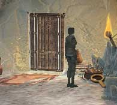
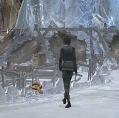

| 概要 | 地図 |
| 淡いヒント集 | ヒント集 | 的確なヒント集 |
| 攻略最短ルート |
| 場所選択に戻る |
ユコール族の村(前半)
| 目覚める 外へ出る  画像のカーソルの位置を調べ、「トナカイの角」を入手  画像のカーソルの位置を調べ、「革ひも」を入手 (「ストリングショット」が完成する) 太鼓のある場所へ移動 画像のカーソルに位置に対して「ストリングショット」を使用する 奥へ移動し、椅子に座る祈祷師に話しかける 「ハンス」、「ミッション」、「夢」、「ミッション」の順に話を聞く  祈祷師の部屋、画面左へ移動し「祈りの車輪」を入手
| 次へ >> |
|
| 場所選択に戻る |
| 概要 | 地図 |
| 淡いヒント集 | ヒント集 | 的確なヒント集 |
| 攻略最短ルート |
Syberia II
| 目次へ戻る | ページの上部へ |